If you are looking for how to get started with Azure Data Factory (ADF), I will definitely recommend you to go through Cathrine Wilhelmsen’s – Beginner’s Guide to Azure Data Factory. It helped me to understand the basics for ADF before starting work on a project I recently had a chance to participate at my workplace.
The compute infrastructure that is required by ADF provides the following data integration capabilities across different network environment:
- Data Flow Execution
- Data Movement Execution
- Dispatch of Activities
- SSIS Package Execution
Data Factory offers three types of Integration Runtime (IR), and you should choose the type that best serve the data integration capabilities and network environment needs you’re looking for. These three types are:
- Azure
- Self-hosted
- Azure-SSIS
This blog will help you setup the Self-Hosted Integration Runtime (SHIR) in Windows Container and show you the steps to run it on a Windows machine as well as on Azure Container Instance.
Prerequisites
-
Windows Container
The Windows container feature is available on Windows Server (Semi-Annual Channel), Windows Server 2019, Windows Server 2016, and Windows 10 Professional and Enterprise Editions (version 1607 and later).
-
Docker Version 2.3 or later.
-
Self-Hosted Integration Runtime Version 4.11.7512.1 and later. Download the latest version available.
Build the Docker image
To build the docker image we will be using Windows 10 Professional with Docker Desktop 3.1.0 in Windows Container mode.
Download the the latest source code for the SHIR windows container support here.
Download the latest version of SHIR into SHIR folder [5.2.7681.6 in this case]
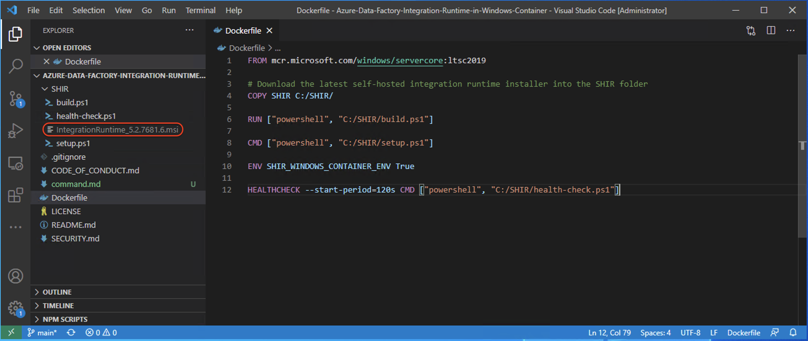
On the shell navigate to the folder where you downloaded the project from github to build the docker image. Execute the command below:
|
|
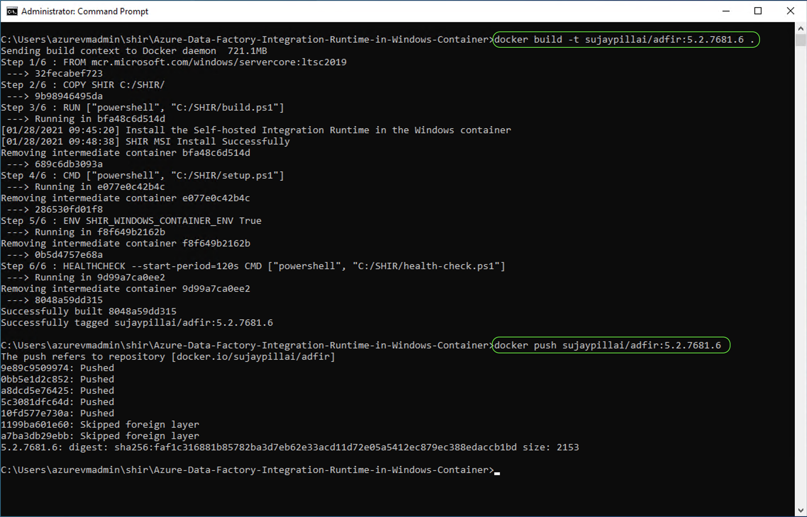
You can find the same image on DockerHub as sujaypillai/adfir:5.2.7681.6
To register your SHIR Windows container you would need a valid Authentication Key which is passed as an environment variable AUTH_KEY in the command below:
|
|
To get the AUTH_KEY you will have to create a SHIR and get the value from the settings tab as shown below:
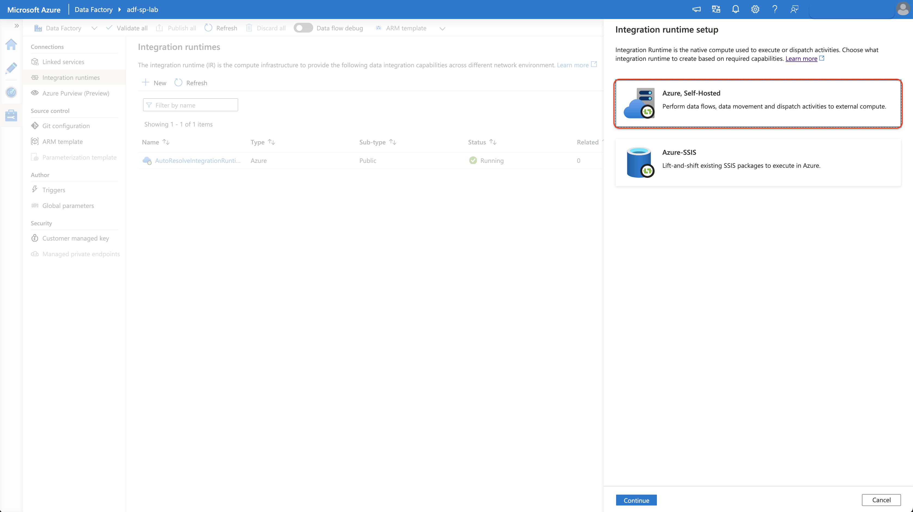
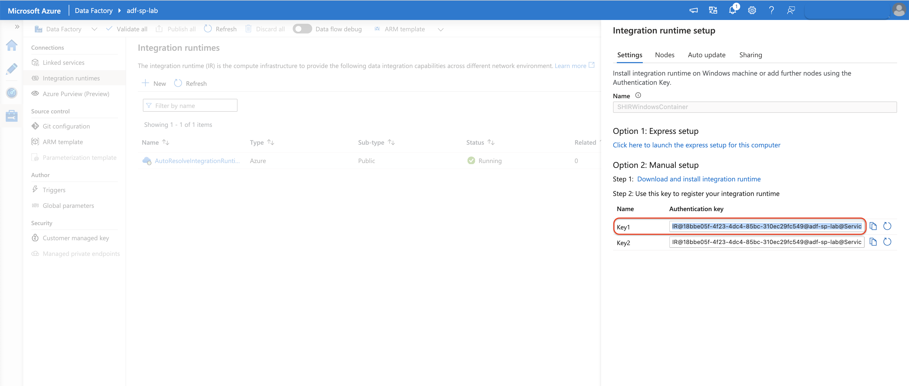
|
|
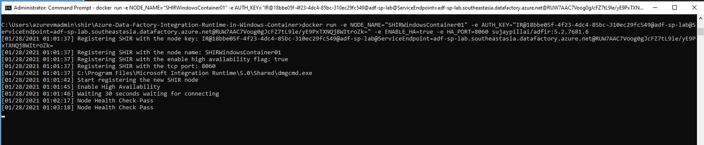
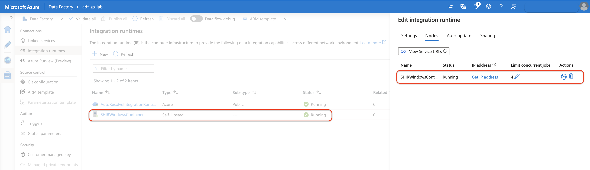
You can get more details about your SHIR by clicking on the Monitor icon:
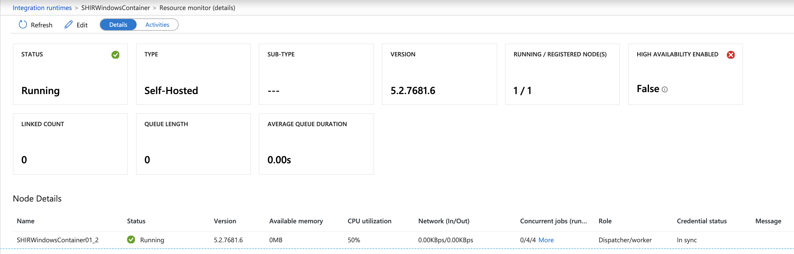
Now that we have the image pushed on DockerHub how about running it on ACI ?
Set the environment variables required by the SHIR docker image sujaypillai/adfir:5.2.7681.6
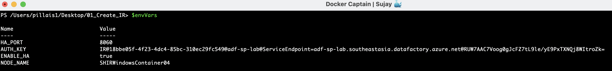
Lets deploy the container instance using Powershell as below:
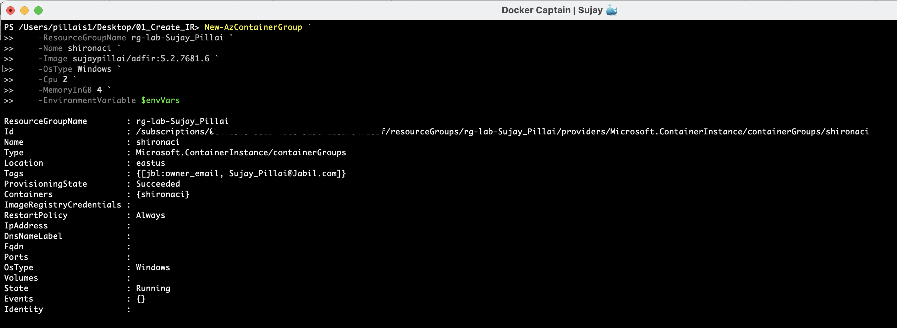
This being a windows container it takes sometime for the image to be pulled down and for the ACI instance to be up and running.
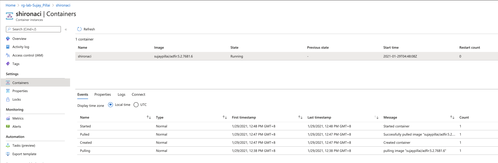
Once the container is running you should see itself registering it as a SHIR.
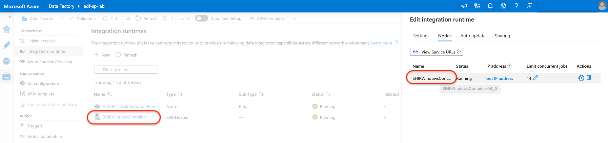
Thus we were able to run the SHIR Docker container on a virtual machine as well as an Azure Container Instance.